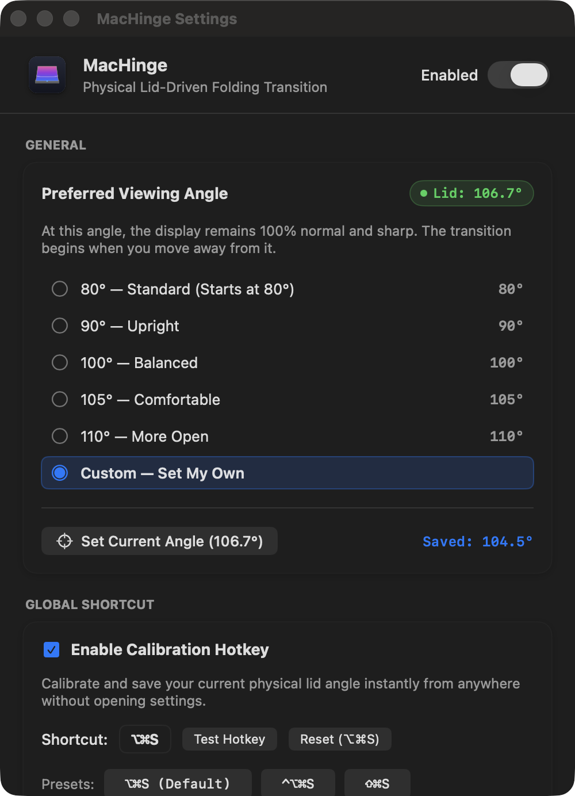
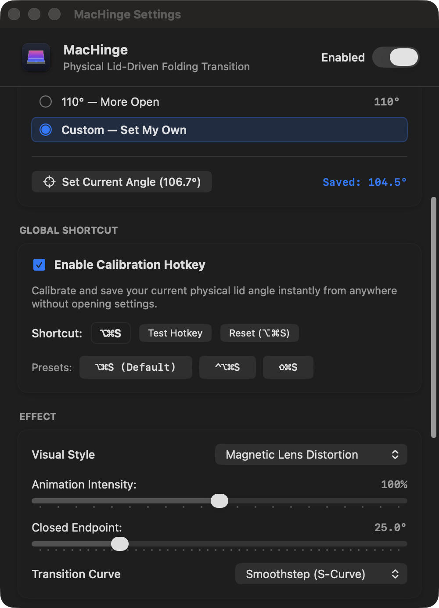
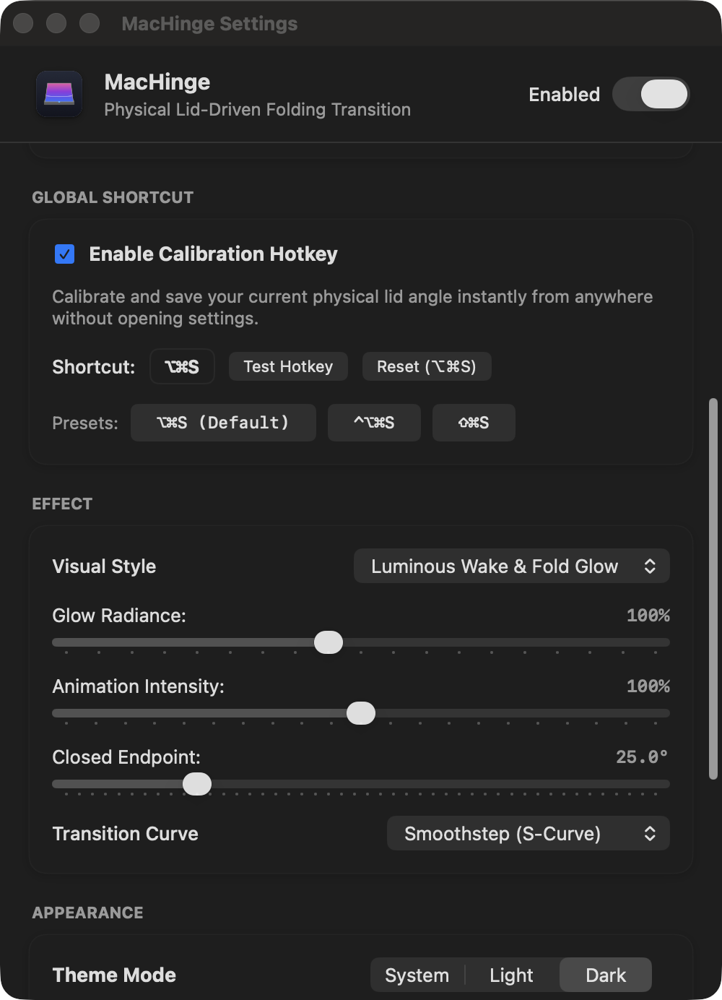
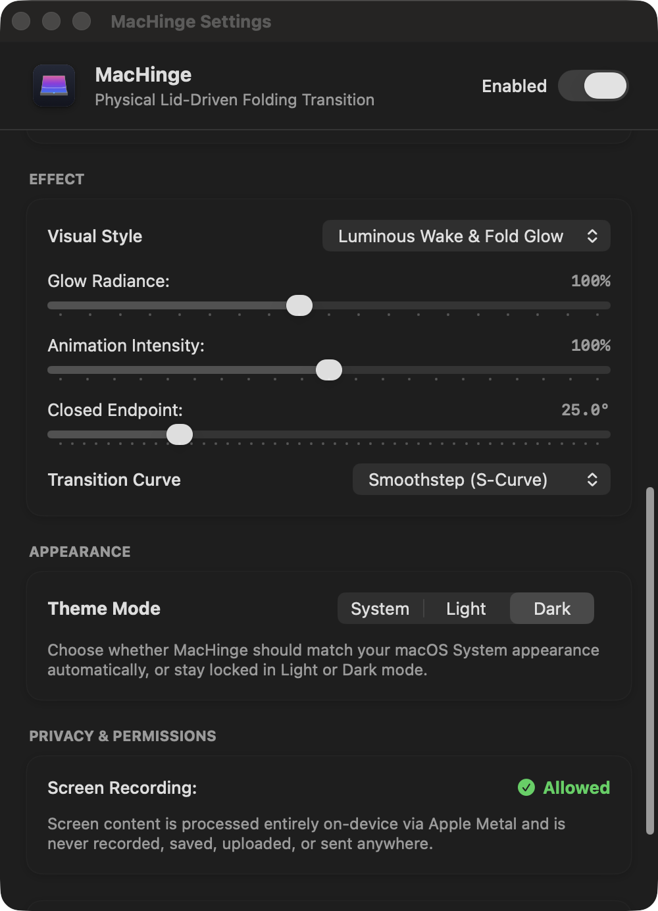
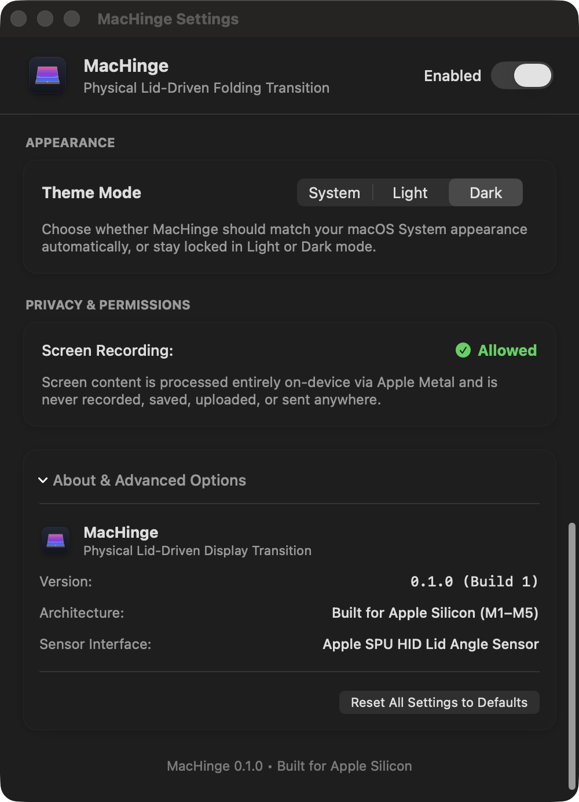
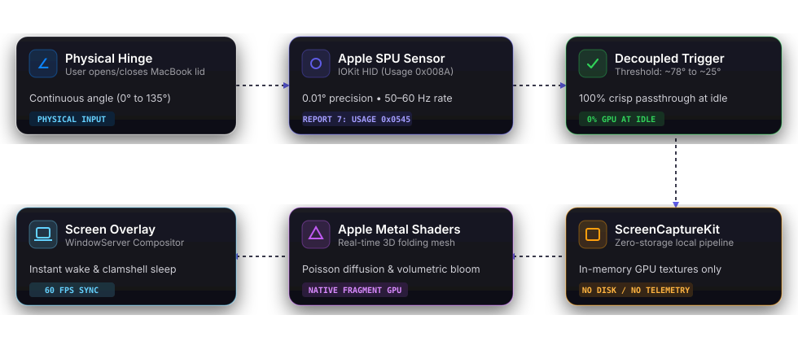

Your MacBook has a hinge.
MacHinge gives it an effect.
Turn your MacBook’s lid movement into a visual experience. MacHinge reacts to the physical hinge angle in real time and transforms it into fluid, GPU-accelerated screen transitions.
A new way to interact with your MacBook.
MacHinge connects the physical mechanics of your laptop to its graphics pipeline, mapping lid movement to on-screen visual behavior.
Move the Lid
Open or close your MacBook naturally. The physical hinge angle changes continuously as your hands guide the display.
SPU Reads the Angle
MacHinge queries the Apple Sensor Processing Unit (SPU) via IOKit HID services, receiving angle reports at 50–60 Hz with 0.01° precision.
Metal Shaders Respond
The angle is converted to animation progress, driving real-time 3D perspective folding, glass diffusion, or progressive radiance via Metal shaders.
Make it behave exactly how you want.
Every setting shown below is captured directly from the real MacHinge application running on macOS.
Preferred Viewing Angle
Your screen stays 100% normal, sharp, and untouched across your entire ergonomic viewing range (80° to 120°+). The folding animation initiates only when the lid passes below the closing threshold.
- 5 Ergonomic Presets: 80° Standard, 90° Upright, 100° Balanced, 105° Comfortable, 110° More Open.
- Custom Sensor Calibration: Set your own physical viewing angle with one click.
- Live Angle Badge: Real-time hardware angle readout updated directly from the SPU sensor.

Calibrate Without Opening Settings
Calibrate and save your preferred physical lid angle instantly from anywhere with a system-wide global shortcut. MacHinge registers native Carbon hotkeys with zero accessibility permission requirements.
-
Default Hotkey:
⌥⌘S(Option + Command + S). -
Built-in Presets: Quick selection for
⌥⌘S,⌃⌥⌘S, and⇧⌘S. - Key Recording: Assign your own custom combination with modifier validation.
- On-Screen Pill Toast: Visual confirmation pill HUD appears whenever the hotkey is pressed.

Visual Style & Shader Physics
Fine-tune the visual dynamics of the folding mesh to match your taste. Choose between multiple distinct shader algorithms and calibrate response curves.
- Visual Style Picker: Toggle between Luminous Glow, Frosted Glass, and Magnetic Lens.
- Glow Radiance: Adjust bloom intensity from 20% to 200%.
- Animation Intensity: Calibrate fold depth from 50% to 150%.
- Transition Curves: Smoothstep (S-Curve), Ease-In-Out Sine, Natural Ease (Power 1.4), or Linear.

100% On-Device Processing
MacHinge uses macOS ScreenCaptureKit solely to project the desktop image into an in-memory Apple Metal GPU texture for real-time shaders. No pixels are ever saved to disk or transmitted.
- Theme Mode: Match macOS System appearance automatically, or lock into Light or Dark mode.
- Zero Disk Storage: Captured textures exist solely in volatile GPU memory during active motion.
- Zero Network Telemetry: No analytics SDKs, trackers, or remote telemetry.

Built for Apple Silicon
Engineered from the ground up for modern MacBook architectures. Runs quietly in the menu bar without occupying Dock space.
- Native Version: MacHinge 0.1.0 (Build 1).
- Apple Silicon Architecture: Native ARM64 optimization for M1, M2, M3, M4, and M5 MacBooks.
- Sensor Interface: Apple SPU HID Lid Angle Sensor (0x05AC / 0x008A).

Choose your visual language.
MacHinge includes three distinct GPU-accelerated visual styles that react continuously to physical lid movements.
Built around the hinge.
A high-performance pipeline connecting physical hardware sensors directly to Metal GPU shaders.

Apple SPU HID Integration
Queries physical lid angle reports directly from the Apple Sensor Processing Unit using I/O Kit HID services (Usage 0x008A). Samples at 50–60 Hz during motion with 0.01° resolution.
Decoupled Trigger & 0% GPU Idle
When stationary at normal viewing angles (> 78°), active Metal rendering and screen capture pause automatically, resulting in zero rendering overhead during daily work.
Metal-Accelerated 3D Shaders
Custom fragment shaders calculate real-time 3D perspective foreshortening, cylindrical fold curves, Poisson glass diffusion, and velocity-coupled bloom directly in local GPU memory.
Control MacHinge without opening settings.
Calibrate your anchor viewing angle instantly from anywhere with a system-wide hotkey.
-
1
Launch MacHinge
MacHinge runs quietly in your macOS menu bar (
∠) without cluttering the Dock. -
2
Adjust to Your Preferred Angle
Move your MacBook screen to whichever ergonomic position is most comfortable for your workspace.
-
3
Press
⌥⌘Sto CalibrateA subtle on-screen pill HUD confirms your angle has been saved as the new normal anchor.
-
4
Close the Lid to Trigger
As the lid moves past the closing threshold, your selected Metal effect responds in physical sync.
Make your MacBook move differently.
Explore the effects, configure your preferences, and experience MacHinge on macOS.